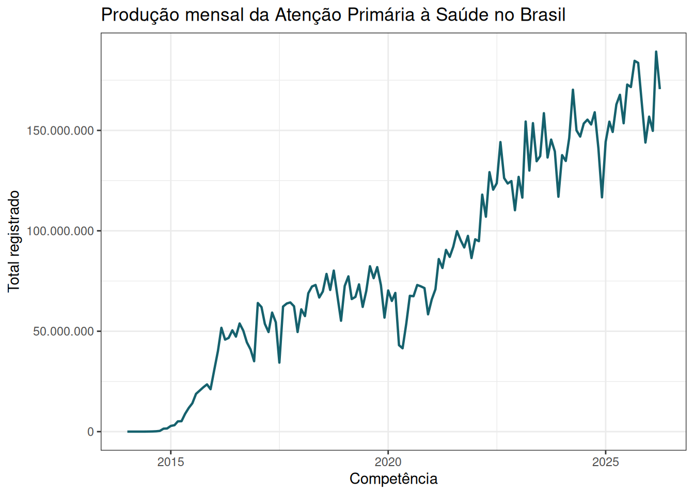
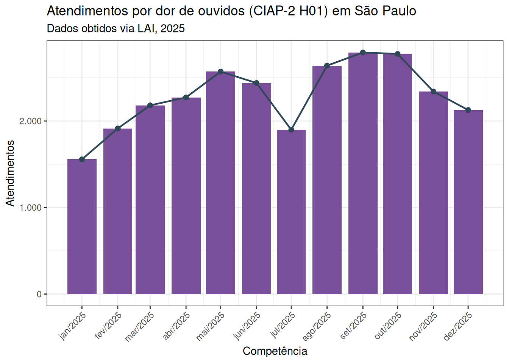

Dados do SISAB
Atenção Primária à Saúde em séries municipais abertas
2026-11-06
Objetivo da conversa
Mostrar como transformar os registros agregados do SISAB em uma base aberta, auditável e útil para pesquisa, gestão e monitoramento da Atenção Primária à Saúde.
Em 20 minutos:
- o que o SISAB registra;
- por que o acesso ainda é difícil;
- como os dados foram coletados e organizados;
- como acessar, analisar e interpretar os resultados.
Por que falar de SISAB?
A APS é a principal porta de entrada do SUS, mas seus dados ainda são pouco usados na escala e na granularidade que poderiam.
O SISAB/SIAPS reúne informações sobre:
Atendimentos e visitas
produção registrada por equipes e serviços.
Procedimentos
ações realizadas na rotina da APS.
Problemas e condições
motivos de consulta, diagnósticos e condições avaliadas.
O problema de acesso
Transparência ativa
- relatórios públicos no site do SISAB;
- consultas por competência, município e categoria;
- úteis para olhar casos pontuais;
- pouco práticos para baixar séries longas.
Transparência passiva
- pedidos via LAI;
- necessária para contagens por CID-10 e CIAP-2;
- respostas podem ter formatos diferentes;
- exige tratamento de proveniência.
O desafio é transformar relatórios e respostas administrativas em arquivos tabulares consistentes, versionáveis e reutilizáveis.
O que foi construído
1. Coleta automatizada dos relatórios públicos
Produção, procedimentos e problemas/condições avaliadas por município, competência, faixa etária e sexo.
2. Processamento de respostas via LAI
Atendimentos mensais por município, tipo de código, CID-10 ou CIAP-2, código e quantidade.
3. Exportação em formatos abertos
Arquivos anuais em CSV compactado e Parquet.
4. Publicação no Zenodo
Depósitos organizados por ano ou período, com DOI e arquivos reutilizáveis.
Duas fontes, duas estratégias
| Fonte | O que entra | Estratégia |
|---|---|---|
| Relatórios públicos do SISAB | produção, procedimentos, problemas e condições avaliadas | raspagem automatizada das consultas municipais mensais |
| Lei de Acesso à Informação | atendimentos por CID-10 e CIAP-2 | padronização de respostas, resolução de sobreposições e preservação de proveniência |
As duas fontes não competem: elas se complementam. Uma mostra a produção pública agregada; a outra abre uma camada diagnóstica ainda ausente da transparência ativa.
Repositórios do fluxo
sisab_scrapper
- coleta relatórios públicos;
- itera competências, municípios, sexo e faixa etária;
- exporta bases anuais;
- foco em produção, procedimentos e condições avaliadas.
sisab_lai
- processa arquivos recebidos por LAI;
- padroniza diferenças de esquema;
- resolve sobreposições entre pedidos;
- mantém informações de pedido e arquivo-fonte.
Estrutura dos arquivos
Chaves territoriais
uf, ibge, municipio ou co_municipio_ibge
Tempo
competencia mensal, com arquivos organizados por ano
Medidas
valor nos relatórios públicos ou qt_atendimentos nos dados LAI
Nos relatórios públicos, a estrutura típica inclui competencia, uf, ibge, municipio, faixa_etaria, sexo, categoria do relatório e valor.
Nos dados via LAI, a estrutura central é município, competência, tp_codigo, codigo e quantidade de atendimentos.
Cobertura publicada
| Período | Conteúdo principal |
|---|---|
| 2014-2016 | produção, procedimentos e condições avaliadas do SISAB público |
| 2017-2025 | SISAB público e atendimentos CID/CIAP via LAI |
| 2026-01 a 2026-04 | SISAB público e atendimentos CID/CIAP via LAI |
Todos os depósitos estão publicados no Zenodo e listados na página:
Exemplo 1: produção mensal

Uma série mensal permite detectar sazonalidade, rupturas e mudanças no padrão de registro da APS.
Exemplo 2: CID e CIAP por LAI

Os dados por CID-10 e CIAP-2 aproximam a análise da clínica e do motivo de consulta, desde que lidos como registros administrativos.
Exemplo 3: intensidade de registro

A taxa por 100 habitantes ajuda a comparar intensidade de registro, mas não deve ser lida automaticamente como acesso, cobertura ou qualidade.
Que decisões podem ser apoiadas?
Monitorar a produção
Identificar meses atípicos, quedas abruptas, retomadas e sazonalidades.
Auditar o registro
Localizar municípios com ausência, saltos ou padrões incompatíveis com a série histórica.
Planejar linhas de cuidado
Observar motivos de consulta, condições acompanhadas e procedimentos registrados.
Comparar territórios
Apoiar análises por município, UF, faixa etária, sexo e intensidade de registro.
O que estes dados não respondem sozinhos?
Registro administrativo não é sinônimo automático de acesso, cobertura, incidência ou qualidade do cuidado.
Não mede sozinho acesso
Uma baixa contagem pode ser baixa demanda, baixa oferta, falha de registro ou combinação disso.
Não mede sozinho incidência
CID-10 e CIAP-2 indicam registros de atendimento, não necessariamente ocorrência real na população.
Não mede sozinho qualidade
Mais registros podem indicar maior atividade, melhor registro ou mudanças operacionais.
Como acessar em R
library(arrow)
library(dplyr)
library(zendown)
arquivo <- zen_file(
deposit_id = 20597086,
file_name = "sisab_saude_producao_2025.parquet"
)
producao_2025 <- read_parquet(arquivo)
producao_2025 |>
group_by(tipo_producao) |>
summarise(total = sum(valor, na.rm = TRUE), .groups = "drop") |>
arrange(desc(total))Boas práticas de uso
Antes da análise
- conferir período e fonte;
- identificar filtros aplicados;
- observar mudanças de sistema e registro;
- manter o DOI e a versão do depósito.
Durante a interpretação
- distinguir produção registrada de demanda real;
- tratar zeros e ausências com cuidado;
- comparar municípios com contexto;
- documentar decisões de limpeza.
Limitações
O SISAB mede registros enviados ao sistema. Isso é próximo da realidade da APS, mas não é a própria realidade.
Pontos de atenção:
- mudanças nas práticas de registro e envio;
- cobertura e maturidade distintas entre municípios;
- diferenças entre conceitos de produção, atendimento, procedimento e condição avaliada;
- dados CID/CIAP dependem de respostas LAI e podem exigir auditoria de proveniência.
Para onde avançar
Atualização mensal
incorporar novas competências públicas e novos pedidos LAI.
Transparência ativa
defender publicação direta de CID-10 e CIAP-2 no SISAB/SIAPS.
Ferramentas de uso
painéis, auditorias, pacotes e análises reprodutíveis.
A meta não é substituir o SISAB, mas criar uma ponte entre o sistema oficial, a transparência pública e o uso analítico dos dados.
Encerramento
Dados abertos da APS tornam o SISAB mais analisável, auditável e útil para decisões no SUS.
Links:
- dados e exemplos: rfsaldanha.github.io/data-projects/dados-aps.html
- coleta pública: github.com/rfsaldanha/sisab_scrapper
- processamento LAI: github.com/rfsaldanha/sisab_lai
Dados do SISAB | APS